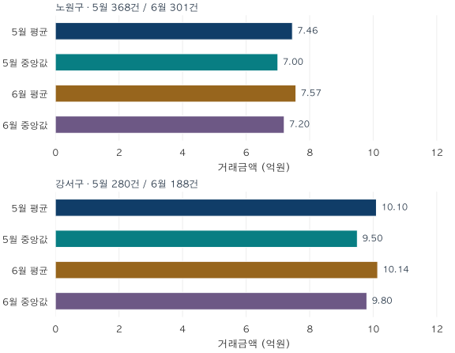

통계의 함정 · 1 / 4
평균과 중앙값, 둘 다 맞는데 왜 다른 이야기를 할까?
같은 거래를 평균과 중앙값으로 요약하면 무엇이 달라질까요? 노원구·강서구 실제 아파트 집계로 기간·건수·대표값을 읽고, 대표값과 시세가 왜 다른지 설명합니다.
분석 기간 · 2026년 5~6월 계약 · 선택 평형군 | 보유 자료 스냅샷 생성 · 2026-10-04
“통계적으로 집값이 올랐습니다.” 이 문장은 단단하게 들립니다. 그런데 통계라는 말은 계산 방법을 가리킬 뿐, 우리가 궁금한 질문에 답했다는 보증은 아닙니다. 숫자를 의심하기 전에, 그 숫자가 무엇을 세었는지부터 읽어봅시다.
1. 가격보다 먼저 날짜와 건수를 읽습니다
어느 표에 ‘2026년 6월, 301건, 평균 7.57억 원’이라고 적혀 있다고 합시다. 6월은 계약한 달일까요, 신고한 달일까요, 집계를 발표한 달일까요? 같은 거래도 어느 날짜로 묶느냐에 따라 다른 달의 통계에 들어갑니다.
이 강의의 실제 사례는 노원구·강서구에서 2026년 5~6월 계약한 매매입니다. 전용 17·18평형과 25·26평형만 합쳤습니다. 각각 59㎡형과 84㎡형이 포함되지만, 정확히 59㎡와 84㎡만 골랐다는 뜻은 아닙니다. 구 전체 거래도 아닙니다.
- 계약 시점
- 거래가 속하는 시간입니다. 아래 표의
ym은 계약월입니다. - 집계 기준일
- 어느 날짜의 가격 상태를 비교하는지 정합니다. 기간 중 거래를 묶는 월평균과 월말 하루를 기준으로 한 추정가격은 다릅니다.
- 정보 시점
- 언제까지 입수한 신고·정정을 반영했는지입니다. 이번 보유 자료의 스냅샷 생성일은 2026년 10월 4일이며, 원래 입수 시점은 복원하지 못했습니다. ‘6월 당시 알 수 있었던 값’은 아닙니다.
한 달이 끝났어도 통계가 영원히 확정되는 것은 아닙니다. 뒤늦게 들어온 신고나 취소·정정으로 과거 값이 달라질 수 있습니다. 또한 301건은 301세대의 전체 재고가 아니라 조건을 통과한 거래 301건입니다. 팔리지 않은 집들은 거래가격 평균의 분모에 없습니다.
2. 평균은 합계를, 중앙값은 순서를 보존합니다
거래금액을 x₁, x₂, …, xₙ이라고 쓰겠습니다. n은 거래 건수입니다. 산술평균은 다음과 같습니다.
평균 = (x₁ + x₂ + … + xₙ) ÷ n
따라서 평균 × 거래 건수 = 그 기간의 거래금액 합계입니다.
중앙값은 금액을 작은 순서대로 정렬한 뒤 가운데를 잡습니다. 홀수 건이면 (n+1)/2번째 값, 짝수 건이면 n/2번째와 그다음 값의 평균입니다. 수학적으로 평균은 관측값과의 제곱거리 합을 최소화하고, 중앙값은 절대거리 합을 최소화합니다. 짝수 표본에서는 가운데 두 값 사이 전체가 절대거리 합을 최소화하며, 보통 두 값의 평균을 중앙값으로 보고합니다.
4, 5, 6, 7, 18의 평균은 8, 중앙값은 6입니다. 마지막 거래만 38로 바꾸면 평균은 12가 되고 중앙값은 여전히 6입니다. 평균에는 큰 금액의 변화가 그대로 반영되고, 중앙값은 이 예시의 맨 끝 값이 얼마나 큰지에는 반응하지 않습니다.
그래서 거래금액의 총규모를 설명하려면 평균이 유용하고, 극단적인 금액에 덜 흔들리는 가운데 거래를 보고 싶다면 중앙값이 유용합니다. 다만 중앙값이 항상 안정적이라는 뜻은 아닙니다. 가운데 순서를 차지하는 거래 구성이 바뀌면 중앙값도 크게 움직일 수 있습니다. 거래가 한 건이면 평균과 중앙값은 같지만, 근거가 풍부해진 것은 아닙니다.
3. 실제 자료에서는 두 숫자가 얼마나 다를까요?
| 지역 · 계약월 | 거래 건수 | 평균 | 중앙값 |
|---|---|---|---|
| 노원구 · 2026-05 | 368 | 7.4573 | 7.0000 |
| 노원구 · 2026-06 | 301 | 7.5676 | 7.2000 |
| 강서구 · 2026-05 | 280 | 10.1001 | 9.5000 |
| 강서구 · 2026-06 | 188 | 10.1402 | 9.8000 |

실제 관측 집계 · 2026년 5~6월 계약 · 두 지역 모두 같은 가로축 · seaborn으로 작성. 표는 소수 넷째 자리, 그림은 둘째 자리까지 반올림했습니다.
6월 노원구에서는 301건을 합쳐 평균 약 7.57억 원, 중앙값 7.20억 원이 나왔습니다. 강서구 188건은 평균 약 10.14억 원, 중앙값 9.80억 원입니다. 네 지역·월 묶음에서 모두 평균이 중앙값보다 높습니다. 이것만으로 몇몇 거래가 잘못됐다고 결론 낼 수는 없습니다. 두 평형군뿐 아니라 서로 다른 단지와 층도 함께 들어 있기 때문입니다.
이 표에는 개별 분포와 분산이 없으므로, 평균과 중앙값의 간격만으로 분포의 모양이나 통계적 유의성을 판정하지 않습니다. 특히 집계값만으로 상자그림이나 신뢰구간을 만들어낼 수 없습니다. 그림의 막대는 관측된 요약값이며 오차범위를 뜻하지 않습니다.
4. 대표값이 곧 시세가 되는 것은 아닙니다
“우리 집이 지금 얼마인가?”에는 주소, 전용면적, 층, 상태와 거래 시점이 필요합니다. 반면 이 표는 “정해진 두 평형군에서 그달에 거래된 집들의 금액은 어땠나?”에 답합니다. 질문의 대상이 다릅니다.
- 실거래가
- 실제로 신고된 특정 계약의 금액입니다. 취소 여부와 비교 조건을 확인해야 합니다.
- 기간 대표값
- 선택한 거래들을 평균이나 중앙값으로 요약한 값입니다. 기간·범위·포함 규칙이 붙어야 의미가 완성됩니다.
- 모형 추정가격
- 정한 주택 조건과 기준일에 대해 모형이 계산한 값입니다. 관측 거래와 구분하고 추정 오차·자료의 오래됨을 함께 읽어야 합니다.
- 호가·시세
- 호가는 판매자가 제시한 가격입니다. ‘시세’라는 말은 서비스에 따라 조사값·평가값·추정값 등 다른 의미로 쓰일 수 있어 산정 방식을 확인해야 합니다. 이 글은 호가나 외부 시세 자료를 사용하지 않았습니다.
프로젝트에서도 price_manwon은 정제한 거래금액, amount는 매매 관측 조회에서 사용하는 금액이고, 기간 평균·중앙값은 이 관측들을 집계한 결과입니다. 모형의 benchmark_amount는 별도의 추정값입니다. 단위가 모두 만원이라고 같은 종류의 증거가 되지는 않습니다.
5. “중앙값이니까 믿어도 된다”를 고쳐 쓰기
첫 집 시리즈 2편에서 본 가상 예시를 이번에는 직접 계산해 봅시다. 5억 원 주택과 10억 원 주택의 개별 가격이 그대로라고 합시다. 첫 달에는 각각 8건·2건, 다음 달에는 2건·8건 거래됐습니다. 평균과 중앙값은 어떻게 될까요?
연습 답과 해설
평균은 6억 → 9억 원, 중앙값은 5억 → 10억 원입니다. 주택 유형별 가격이 변하지 않아도 거래 구성이 바뀌면 둘 다 오릅니다. “중앙값이니 구성 변화의 영향을 받지 않는다”는 해석은 틀렸습니다.
대표값을 읽는 첫 기술은 더 좋아 보이는 숫자를 고르는 일이 아닙니다. 기간, 대상, 거래 건수, 요약 방법을 한 문장에 함께 적는 일입니다. 다음 편에서는 이미 계산된 평균과 중앙값을 다시 합칠 때 생기는 문제를 풀어봅니다.
분석 방법·출처·재현 자료
실제 집계의 범위
국토교통부 아파트 매매 실거래가 상세 자료 중 노원구·강서구, 2026년 5~6월 계약, 전용 17·18평형과 25·26평형을 사용했습니다. 전용면적㎡를 3.3058로 나누고 0.5 이상을 올린 정수 평형을 묶습니다. 두 평형군 외 거래는 포함하지 않습니다. 식별된 취소·직거래, 토지임대부와 정제상 부적격 관측은 제외합니다. 미확인 상태를 모두 확인했다는 뜻은 아닙니다.
2026년 9월 계약분까지 보유한 자료로 10월 4일 생성한 스냅샷을 재사용했습니다. 원래 정보 입수 시점은 복원하지 못했으며 이후 신고·정정에 따라 값은 달라질 수 있습니다. 두 지역은 비교 방법을 설명하기 위해 선택한 사례이고 전국을 대표하는 표본이 아닙니다.
검증과 그림
지역×월×평형군 8개 셀과 두 평형군 합산 4개 셀의 건수·평균·중앙값을 조회 관측과 정제 거래에서 각각 계산해 대조했습니다. 모든 공개 셀은 10건 이상이며, 이는 공개 최소 건수 조건이지 정확도를 보증하는 임계값이 아닙니다. 전체 중앙값은 개별 거래를 합쳐 계산한 값입니다. 변화율과 가중 평균은 반올림 전 값으로 계산합니다.
그래프는 검증된 공개 집계와 명시된 가상 예시만으로 seaborn에서 작성했습니다. 집계값에 임의로 거래 분포나 신뢰구간을 덧붙이지 않았습니다. 실제 집계와 모집단 정의 내려받기 (JSON). 그림의 가상 재고 예시는 실제 단지나 지역을 나타내지 않습니다.
개념의 근거
평균·중앙값의 일반 정의는 NIST 통계 핸드북의 위치 통계량 설명을 참고할 수 있습니다. 세대수·면적 가중과 지역 총액은 파파펭귄 프로젝트의 재고 집계 정의를 따르며, 수식과 포함 범위는 본문에 공개했습니다. 외부 기관의 가격지수를 재현한 글은 아닙니다.
분석·집필: 파파펭귄 (Nobot Kang). 에이전트를 활용해 계산 검증, 초안과 그림을 작성했습니다. 개별 거래나 단지 식별자는 공개하지 않습니다. 공공데이터포털은 원자료의 이용허락범위를 제한 없음으로 안내합니다(2026-10-08 확인). 글·그림의 이용 조건과 원자료 조건은 별개입니다.